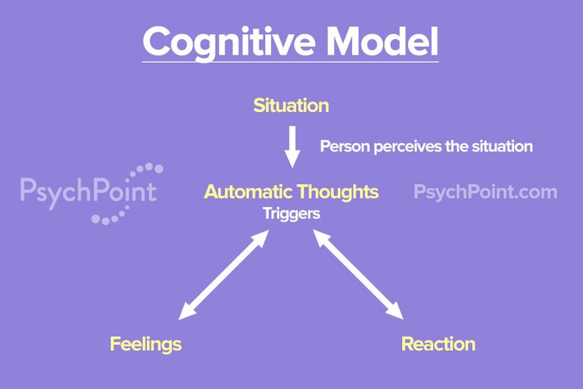
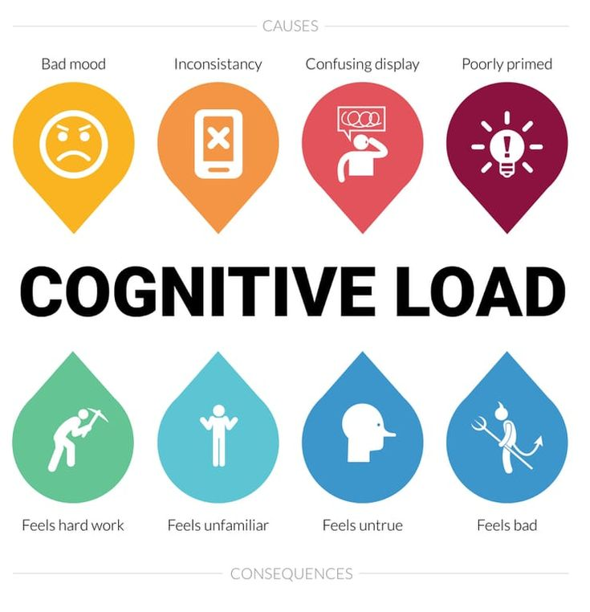
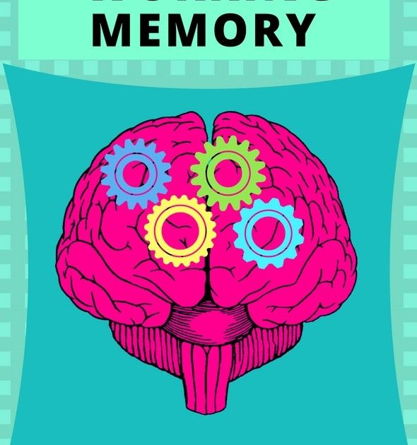

Understanding Cognitive Aspects in UI/UX
Designing user interfaces requires an understanding of human cognition, including mental models, cognitive load, attention, perception and readability, decision-making and sability, and memory.
Cognitive Aspects of UI/UX:
- Mental Models
- Users develop expectations based on previous interactions with digital and physical environments.
- Aligning a design with these expectations makes navigation more intuitive.
- Cognitive Load
- This refers to the mental effort required to understand and interact with an interface.
- Too much complexity can overwhelm users.
- Strategies to reduce cognitive load:
- Keep the interface clean and minimal.
- Reveal information progressively instead of all at once.
- Stick to familiar UI patterns for consistency.
- Attention & Visual Focus
- Users scan content rather than reading every word. A well-structured UI should guide their attention effectively.
- Use size, contrast, and color to highlight important elements.
- Leave enough whitespace to separate sections clearly.
- Apply Gestalt principles to group related content logically.
- Memory & Recognition
- People remember visuals and patterns more easily than text. UI should be designed to rely more on recognition rather than recall.
- Keep layouts and navigation consistent.
- Provide visible cues and predictable interactions.
- Break down complex information into digestible chunks.
- Perception and Readability
- Users interpret visual information before processing text. Ensuring clarity and readability improves engagement.
- Design Tips:
- Choose high-contrast colors for better readability.
- Use simple and readable fonts.
- Avoid unnecessary distractions that may divert user focus.
- Decision-Making & Usability
- Reducing unnecessary choices makes interactions smoother and prevents decision fatigue.
- Optimizing Decision Making:
- Use clear call-to-action buttons with descriptive labels.
- Minimize options where possible to simplify decision-making.
- Implement safeguards like undo actions and confirmation dialogs.


